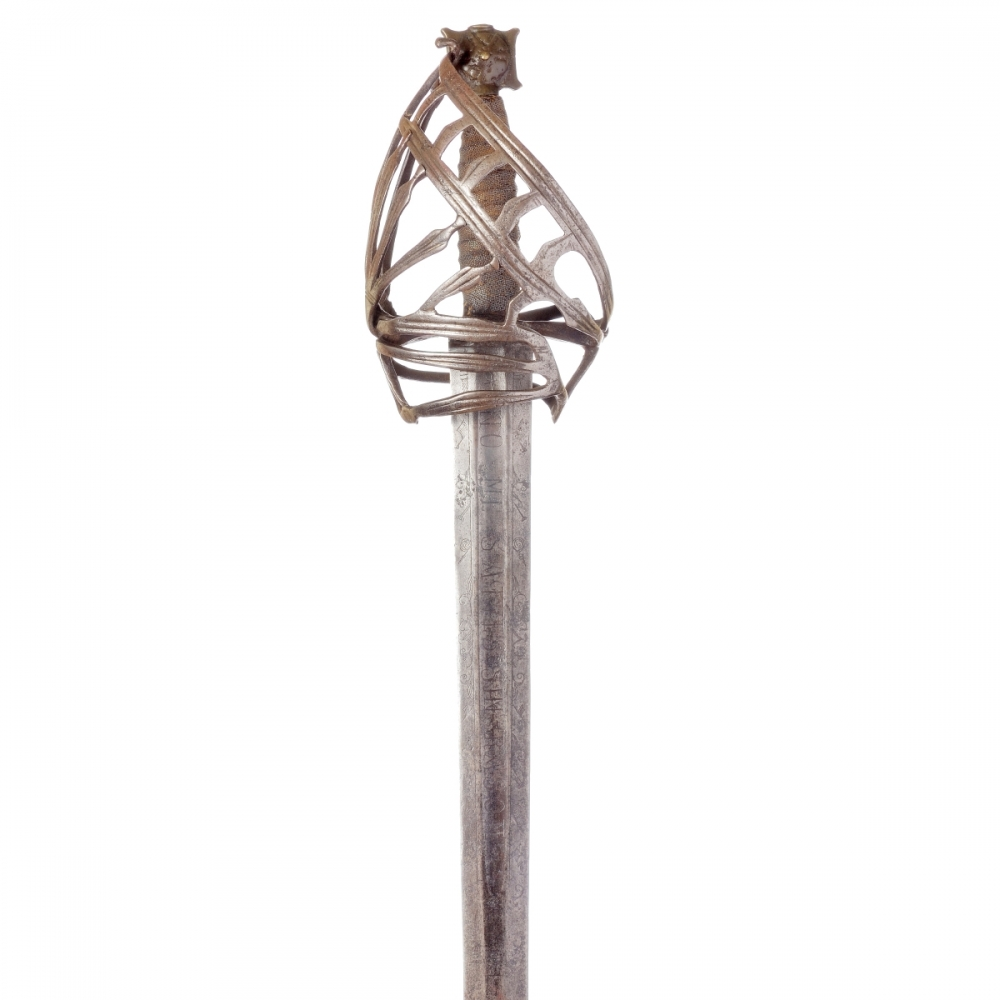
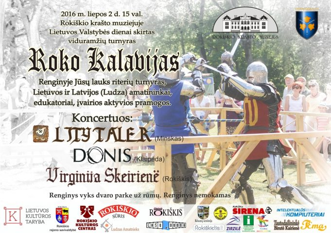
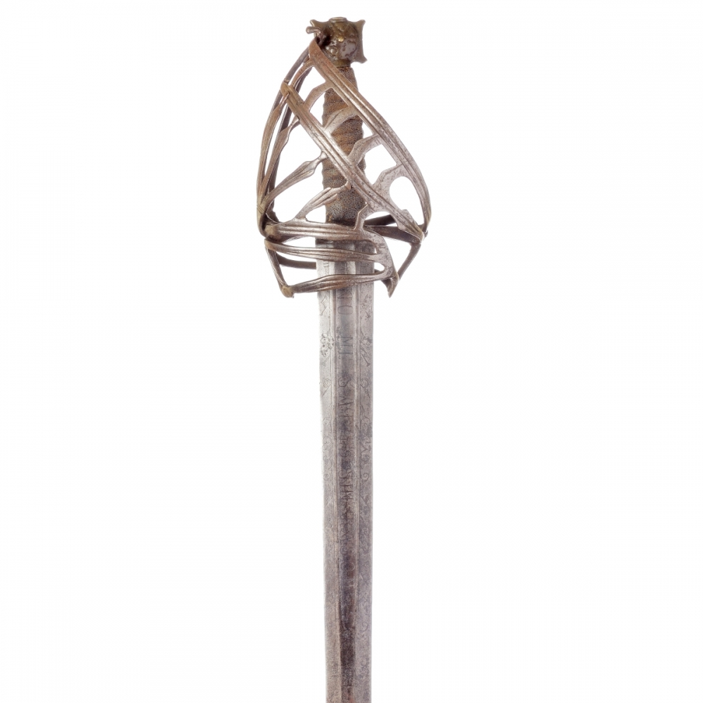
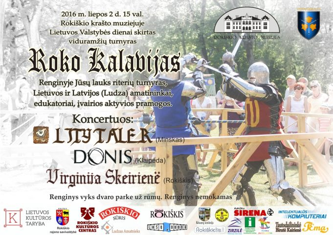

kalavijas - išsamiai DELFI.lt
2020.10.29 10:31
Spalio 29 d., ketvirtadienis | Vilnius 12 Kaunas 11 Klaipėda 12 Šiauliai 9 Panevėžys 11 Alytus 12 Nida 10 Raseiniai 9 Utena 11 Mažeikiai 9 Biržai 11 Kėdainiai 11 Kiti miestai Paieška | Pranešti naujieną | LT RU EN | Reklama Kontaktai | Statistika | + Apie Delfi plius Prisijungti Naujausios Skaitomiausios Lietuvoje Sportas Orai Kriminalai Užsienyje Veidai Horoskopai Gyvenimas Mokslas Verslas Daugiau Sveikata Kultūra Auto M360 Politiko akimis Jaunimas Pilietis Nuomonių ringas Multimedija Teisė Medijos Karas Propaganda PT Melo detektorius Demaskuok Ačiū už pamokas Temos | Delfi Video
Naujienos
Naujausios Skaitomiausios Lietuvoje Sportas Kriminalai Užsienyje Veidai GyvenimasVerslas Mokslas Kultūra Sveikata Auto Pilietis Miestai M360 Politiko akimis
Delfi Video
Tiesioginės transliacijos Delfi Diena Delfi Dėmesio centre LaidosNaudinga
Orai Horoskopai Receptai TV Programa Valiutų kursaiDelfi projektai
Multimedija Idėja Lietuvai Kablys Smalsūs EP Atsakingas požiūris Atgal į gyvenimąDelfi kanalai
Agro Būstas Moterys Šeima Kelionės Grynas Stilius Maistas Letena Karjera Bored Panda Sek DelfiMobilusis Delfi
Naujausios žinios Naujienų temos Delfi Temos kalavijas
kalavijas
Kalavijas – kertamasis ir/ar duriamasis ginklas, sudarytas iš ilgos geležtės ir efeso. Geležtė būna iki 130 cm ilgio ir 4-8 cm pločio. Geležtė gali būti tiesi ar lenkta, dviašmenė, vienašmenė ar beašmenė (tuomet geležtė yra duriamoji). Efesas sudarytas iš rankenos, gardos (viršutinis skersinis, taurelė, lankeliai), apatinio skersinio ir/ar buoželės. Paprasčiausias efesas – rankena su nežymia garda (pvz., katanos cuba ar šaškos stormuo).
Defense spending to reach 2.01-2.09 percent of GDP next year
Lithuania's defense budget is projected to exceed 2 percent of GDP in 2021, according to the Defense Ministry .
Lietuvoje vyko tarptautinės SOP pratybos „Liepsnojantis kalavijas 2020“ (15)
Visoje Lietuvoje rugsėjo mėnesį vyko Specialiųjų operacijų pajėgų ( SOP ) pratybos „Liepsnojantis kalavijas 2020“. Jų pagrindinis tikslas –...
Prezidentas: savo pavyzdžiu įrodėme, kad nedidelės tautos moka branginti laisvę (157)
Sekmadienį Kryžkalnyje, Raseinių rajone, atidarytas memorialas, kuriuo įamžintas Lietuvos partizanų, paaukojusių gyvybes už Tėvynės laisvę...
KAM patikino Baltarusiją: karinės pratybos nenukreiptos prieš nė vieną šalį (12)
Lietuvos Krašto apsaugos ministerijos ( KAM ) atstovai patikino Baltarusijos atstovus, kad didžiausios tradicinės rudens karinės pratybos nėra...
Justinas Žilinskas: neteisinga fantastiką vertinti kaip grynai pramoginę literatūrą
Laidoje „Delfi rytas“ viešėjęs teisininkas, publicistas, rašytojas Justinas Žilinskas dalinosi savo įspūdžiais apie Andrzejaus Sapkowskio...
Intymus vikingų pasaulis: skyrybos, vestuvės, seksualumas ir poligamija
Praktinis patarimų vadovas: kaip nugalėti riterį spindinčiais šarvais?
30 eurų vertės pirkinys kaunietį pavertė ginklų kontrabandininku (189) 325
Surūdijęs metalo luitas atėmė archeologų žadą: radinys – 2 tūkstančių metų senumo lobis (85) 129
Kęstutis Girnius. Tyčiojimasis iš teisingumo (182) 319
Sekmadienio Evangelija. Meilės šviesa (1850)
Ženklas, reiškęs pralaimėjimą: jis nulemdavo gladiatoriaus likimą
Vienas efektyviausių senovinių bukų ginklų: žalos šarvams padarydavo daugiau nei kalavijas (6)
Urumi – sunkiausiai valdomas ir pavojingiausias kardas pasaulyje: neįgudę naudotojai mirdavo (15) 152
Kuršių ginklų vertė šiandien prilygtų ferariui (25)
Sekmadienio Evangelija. Peržengiama riba (317)
Teisėjo mantijos istorija (33) 179
Vyriausybė prisidės prieš memorialo visiems partizanams Kryžkalnyje (106)
Pasidalink piliečio istorijaKryžkalnyje planuoja statyti paminklą partizanams – pristatė projektą (297) 820
Jakavonytė: dar gyvi partizanai tikisi sulaukti tos dienos, kai galės uždegti žvakutę už žuvusius kovos draugus (69) 108
Švedijoje aštuonmetė ežere rado senovinį kalaviją (2)
Milžiniškose Rusijos pratybose – dar neregėti skaičiai ir naujas scenarijus: tikslai gali būti keli (601) 183
Naktį praleido vaiduoklių pilyje: viešnagę prisimins dar ilgai (68) 152
Kaip arklys pabrango 200 tūkst. eurų (1166) 232
Lietuvoje baigiasi didžiosios karinės pratybos (47)
Išskirtinė Delfi medžiagaPakeliui į Lietuvą paskui JAV šarvuočius: nereklaminis žygio veidas (287) 125
Lietuviai su amerikiečiais parodė, kas lauktų jų priešų: su mumis geriau nejuokauti (1523) 1841
Baigėsi didžiausios Baltijos regiono Lietuvos specialiųjų operacijų pajėgų pratybos (4)
Lietuvos keliuose – intensyvus karinės technikos judėjimas (111)
Grybauskaitė apie karines pratybas „Baltops 18“: mus gali stebėti kas nori (71)
1 2 3 4 5 | Populiariausi straipsniai ir video Sekite DELFI REKLAMA KONTAKTAI PRIVATUMAS KARJERA en.delfi.lt ru.delfi.lt pl.delfi.lt delfi.ee rus.delfi.ee delfi.lv ru.delfi.lv UAB DELFI Gynėjų g. 16, 01109 Vilnius +37052045400 info@delfi.lt © 1999-2020 DELFI. Visos teisės saugomos .- Kalavijas - vertimas - Lietuvių-Anglų Žodynas - Glosbe
- Vyksta tarptautinės SOP pratybos „Liepsnojantis kalavijas ...
- kalavijas - lithuanian_language.enacademic.com
- kalavijas - išsamiai DELFI.lt
- Kalavijas - vertimai, sinonimai, gramatika, statistika ...
- Likimo kalavijas - Andrzej Sapkowski | VAGA
- Liepsnojantis kalavijas. Legenda - Lietuvos kariuomenė
- Daumanto kalavijas - Pagrindinis
- Kalavijas (schiavona) | Nacionalinis muziejus Lietuvos ...
- Sapkowski, Andrzej – Likimo kalavijas (FKB 1) – Mainyk ...
- Kalavijas - vertimas - Lietuvių-Anglų Žodynas - Glosbe
Jei aš kalavijas, tai nukaltas iš stiklo. Nes pradedu aižėti… Viena, ką Mara Barou tikrai žino – ji yra kitokia. Maros kraujas raudonas kaip prasčiokų, bet ji turi gebėjimų, būdingų kilmingiesiems sidabriniams: gali valdyti žaibą.
- Vyksta tarptautinės SOP pratybos „Liepsnojantis kalavijas ...
kalavìjas sm. (2) 1. SD41,147, MŽ, R, KlG2, [K], J.Jabl, M, NdŽ plieninis, ilgas, siauras, aštriais ašmenimis kertamasis ginklas, kardas: Žemaitis už ...
- kalavijas - lithuanian_language.enacademic.com
Kalavijas bulgariškai. Vertimas - Žodynas: dictionaries24.com. Kalbų žodynas: lietuvių » bulgarų
- kalavijas - išsamiai DELFI.lt
Kalavijas (schiavona) Venetas, Italija XVII a. I p. Geležis, oda, medis; drožyba, kalstymas Ilgis 106 cm Inv. Nr. VR-365 Eksponatą 2008 m. rugsėjo 20 d. iš Riccardo Mannino (Merkatalė in Val di Peza, Italija) būsimam Valdovų rūmų muziejui įsigijo Lietuvos dailės muziejus. 2009 m. gegužės 27 d. jis perduotas Nacionaliniam muziejui Lietuvos Didžiosios Kunigaikštystės valdovų ...
- Kalavijas - vertimai, sinonimai, gramatika, statistika ...
Likimo kalavijas . Maginės fantastikos knygų ciklo „Raganius“ autorius Andrzej Sapkowski gimė Lenkijoje 1948 m. Išgarsėjęs dar pirmu apsakymu „Raganius“, jis parašė apie raganių Geraltą tris apsakymų rinkinius ir penkis romanus, jie išversti į daugelį kalbų. 2007 m. pagal „Raganiaus“ ciklą sukurtas kompiuterinis žaidimas „The Witcher“ irgi sulaukė pasaulinės ...
- Likimo kalavijas - Andrzej Sapkowski | VAGA
Taip prieštarų sandūroje gimstantis, vertybėmis išgaląstas mąstymas ir matymas - liepsnojantis Cherubinas, mūsų kariuomenės strategijos ir lyderystės kalavijas - taps viena stipriausių, mano gyvenimui kryptį suteikiančių, jėgų, kurias užtvirtins galutinė plieno ornamentika: Trispalvė Lietuvos Ugnis.
- Liepsnojantis kalavijas. Legenda - Lietuvos kariuomenė
Kalavijas vertimo žodynas lietuvių - anglų Glosbe, žodynas, nemokamai. Peržiūrėti milions žodžius ir frazes visomis kalbomis.
- Daumanto kalavijas - Pagrindinis
Vakarų pasaulyje kalavijas vaizduojamas kaip arkangelo Mykolo ginklas. Jis taip pat yra karaliaus Dovydo ir Juditos bei Juditos, kuri kalaviju nukirto galvą Holofernui, atributas. Evangelijoje pagal Joną iš Kristaus burnos išlenda kalavijas (1, 16) kaip simbolis nenugalimos jėgos ir dangiškosios teisybės, kaip žaibas perskrodžiančios ...
- Kalavijas (schiavona) | Nacionalinis muziejus Lietuvos ...
Žodis kalavijas angliškai verčiamas - sword. Lietuvių anglų žodynas. Anglų - Lietuvių; Lietuvių - Anglų; Išversti. Žodžių indeksas: a ...
- Sapkowski, Andrzej – Likimo kalavijas (FKB 1) – Mainyk ...
Labai tikroviškas kalavijasDydis: 80 cmDerinkite su riterio karnavalo kostiumu. Puikiais tiks ir Žiedų valdovo tematikai.Nepamirškite dirbtino kraujo ir riterio vertybių, taip pat pasitreniruokite, kaip nudobti drakoną
Jei aš kalavijas, tai nukaltas iš stiklo. Nes pradedu aižėti… Viena, ką Mara Barou tikrai žino – ji yra kitokia. Maros kraujas raudonas kaip prasčiokų, bet ji turi gebėjimų, būdingų kilmingiesiems sidabriniams: gali valdyti žaibą.
kalavìjas sm. (2) 1. SD41,147, MŽ, R, KlG2, [K], J.Jabl, M, NdŽ plieninis, ilgas, siauras, aštriais ašmenimis kertamasis ginklas, kardas: Žemaitis už ...
Kalavijas bulgariškai. Vertimas - Žodynas: dictionaries24.com. Kalbų žodynas: lietuvių » bulgarų
Kalavijas (schiavona) Venetas, Italija XVII a. I p. Geležis, oda, medis; drožyba, kalstymas Ilgis 106 cm Inv. Nr. VR-365 Eksponatą 2008 m. rugsėjo 20 d. iš Riccardo Mannino (Merkatalė in Val di Peza, Italija) būsimam Valdovų rūmų muziejui įsigijo Lietuvos dailės muziejus. 2009 m. gegužės 27 d. jis perduotas Nacionaliniam muziejui Lietuvos Didžiosios Kunigaikštystės valdovų ...
Likimo kalavijas . Maginės fantastikos knygų ciklo „Raganius“ autorius Andrzej Sapkowski gimė Lenkijoje 1948 m. Išgarsėjęs dar pirmu apsakymu „Raganius“, jis parašė apie raganių Geraltą tris apsakymų rinkinius ir penkis romanus, jie išversti į daugelį kalbų. 2007 m. pagal „Raganiaus“ ciklą sukurtas kompiuterinis žaidimas „The Witcher“ irgi sulaukė pasaulinės ...
Taip prieštarų sandūroje gimstantis, vertybėmis išgaląstas mąstymas ir matymas - liepsnojantis Cherubinas, mūsų kariuomenės strategijos ir lyderystės kalavijas - taps viena stipriausių, mano gyvenimui kryptį suteikiančių, jėgų, kurias užtvirtins galutinė plieno ornamentika: Trispalvė Lietuvos Ugnis.
Kalavijas vertimo žodynas lietuvių - anglų Glosbe, žodynas, nemokamai. Peržiūrėti milions žodžius ir frazes visomis kalbomis.
Vakarų pasaulyje kalavijas vaizduojamas kaip arkangelo Mykolo ginklas. Jis taip pat yra karaliaus Dovydo ir Juditos bei Juditos, kuri kalaviju nukirto galvą Holofernui, atributas. Evangelijoje pagal Joną iš Kristaus burnos išlenda kalavijas (1, 16) kaip simbolis nenugalimos jėgos ir dangiškosios teisybės, kaip žaibas perskrodžiančios ...
Žodis kalavijas angliškai verčiamas - sword. Lietuvių anglų žodynas. Anglų - Lietuvių; Lietuvių - Anglų; Išversti. Žodžių indeksas: a ...
Labai tikroviškas kalavijasDydis: 80 cmDerinkite su riterio karnavalo kostiumu. Puikiais tiks ir Žiedų valdovo tematikai.Nepamirškite dirbtino kraujo ir riterio vertybių, taip pat pasitreniruokite, kaip nudobti drakoną
 


